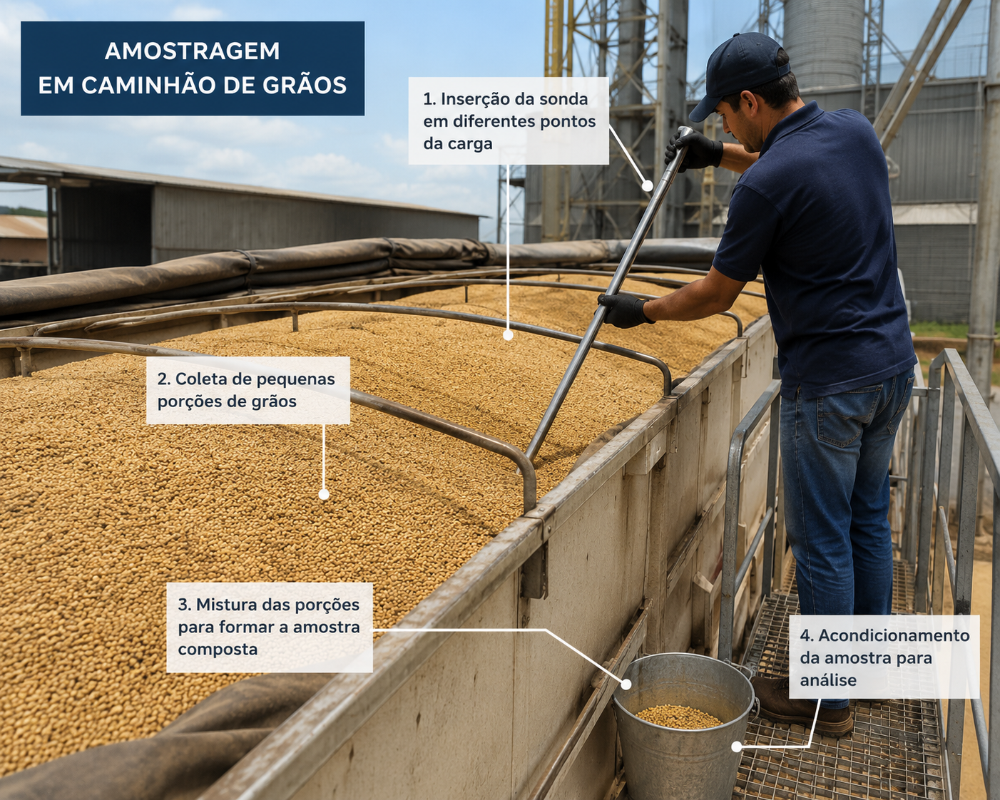
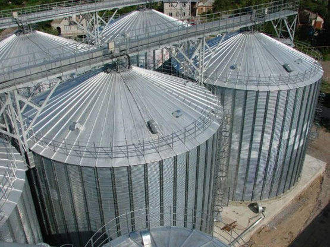

Ingredientes de qualidade chegam à fábrica e passam por rigorosa inspeção, nossas análises são feitas em laboratório próprio, garantindo a segurança e qualidade dos insumos utilizados na fabricação da ração pet. Contamos com tecnologias de ponta como o aparelho Nirs para análise rápida e precisa dos ingredientes, assegurando que apenas matérias-primas de alta qualidade sejam utilizadas em nossos produtos.
Somente após aprovação do Controle de Qualidade os ingredientes são liberados para armazenamento.
A QualiDog é comprometida com a excelência em cada etapa do processo, e a recepção da matéria-prima é fundamental para garantir a qualidade final dos nossos produtos.

Insumos armazenados em silos com sistema de ventilação, controle de temperatura e umidade, além de medidas de proteção contra pragas e contaminação. Contamos com painel de controle automatizado para monitoramento em tempo real! O primeiro que entra é sempre o primeiro que sai!
Ingredientes frescos e qualidade do início ao fim!